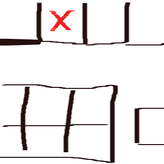
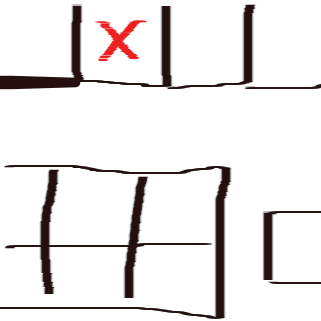

Mein Name ist Felix Tantsch, ich befinde mich in einer Ausbildung zum Fachinformatiker für Anwendungs- entwicklung im ersten Lehrjahr.
Diese Ausbildung absolviere ich im Annedore-Leber Berufsbildungswerk.
Auf meiner Website finden Sie viele persönliche Informationen.
Auf meiner Website finden Sie viele persönliche Informationen.
Meine Zeit im BBW
Ich besuche seit dem 01. September im Rahmen einer Berufsvorbereitenden Bildungsmaßnahme das BBW. Ich habe insgesamt 3 Bereiche im BBW ausprobiert.
1. IT 2. Wirtschaft und Verwaltung 3. Elktronik
Ich habe mich für die Anwendungsentwicklung entschieden, weil ich mich für Computer, und die Interaktion von Menschen mit dem Computer interessiere.
Mich begeistert es, die Bedienung für Computer und Oberflächen, mit denen ein/e Nutzer/in interagiert, zu erstellen.
Programmierskills
Ich beherrsche Grundlagen in der Programiersprache C.
Ein paar Erfahrungen mit Unity habe ich sammeln können. Unity verwendet als Scriptsprache C#.
Diese Seite ist eine der vielen HTML/CSS Projekte die ich umgesetzt habe.
Ein paar Erfahrungen mit Unity habe ich sammeln können. Unity verwendet als Scriptsprache C#.
Diese Seite ist eine der vielen HTML/CSS Projekte die ich umgesetzt habe.
Kontakt
Raum B146
Der Platz mit dem roten "X" markiert ist mein Arbeitsplatz

Der Platz mit dem roten "X" markiert ist mein Arbeitsplatz
